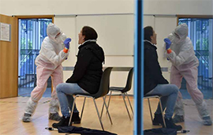

Actualité
À Rostock, le modèle du dépistage préventif
Dans une station de dépistage du Covid-19, près de Munich, en Allemagne. PHOTO CHRISTOF STACHE/AFP
Henry Laaser n'a ni symptômes, ni personnes contaminées par le Sars-Cov2 dans son entourage. Pourtant, ce matin-là à Rostock, dans le nord de l'Allemagne, il est venu se faire dépister. " Je voulais simplement en avoir le coeur net, explique ce joueur de football dans l'équipe locale. J'ai pris rendez-vous en ligne en quelques minutes. En plus, c'est gratuit. "
Le centre de dépistage est installé sous une grande tente à proximité de la vieille ville, où les badauds circulent à nouveau, depuis que l'Allemagne a autorisé la réouverture des commerces la semaine dernière. Dans les rues de Rostock, la vie semble avoir repris son cours habituel, si ce n'était l'absence de touristes, d'ordinaire nombreux en cette saison dans le premier port de croisière du pays.
Sous le regard attentif d'une laborantine en tenue de protection, Henry Laaser effectue lui-même le prélèvement dans le fond de sa gorge, à l'aide d'un long coton-tige, appelé écouvillon. L'échantillon est ensuite analysé sur place, en quatre heures.
L'Allemand de 32 ans est convaincu par la méthode. " Tester ceux qui, comme moi, n'ont pas l'impression d'être contaminés, c'est le moyen le plus efficace pour maîtriser l'épidémie, assure-t-il. Si j'étais déclaré positif, je me comporterais différemment. Je ne sortirais plus du tout, ou s'il le faut, uniquement avec un masque. "
Brigades de dépistage
Voilà l'une des clés de la gestion de l'épidémie outre-Rhin : le déploiement d'un dépistage à grande échelle. Depuis l'apparition du premier cas allemand fin janvier, plus de 2,5 millions de tests ont été réalisés, soit cinq fois plus qu'en France.
L'Allemagne a pris très tôt la mesure du problème, en développant le premier test de dépistage au monde du nouveau coronavirus. Elle mobilise ses laboratoires, publics comme privés. Outre les hôpitaux et les agences locales de santé, les médecins généralistes sont chargés de réaliser les prélèvements. Les étudiants en médecine sont appelés en renfort pour constituer des équipes mobiles de dépistage. Des brigades de " détectives Corona " assurent le traçage de l'entourage de chaque personne testée positive. Les critères d'accès au test sont également plus souples : depuis mi-avril, il suffit d'avoir des symptômes pouvant évoquer le virus.
Mais Rostock va encore plus loin. Dès le mois de février, son maire, Claus Ruhe Madsen, a voulu faire de sa ville de 200 000 habitants une pionnière du dépistage préventif. Son idée : abolir les critères, et tester tous les habitants qui le souhaitent, en particulier les plus exposés au risque d'une contamination.
Il passe un accord avec l'entreprise locale de biotechnologie Centogene, 500 employés, leader européen du dépistage des maladies génétiques. En échange d'une participation aux frais, la société privée mobilise deux de ses laboratoires et vingt salariés de son département Recherche et développement. Treize centres de dépistage sont ouverts dans la région, un quatorzième est en projet à Hambourg. " Nous testons majoritairement des employés d'hôpitaux, de maisons de retraite, des pompiers mais aussi du personnel de supermarché ", détaille Susann Krake, responsable du projet.